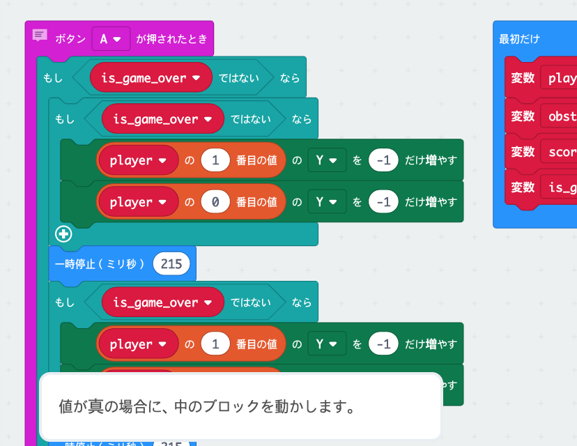
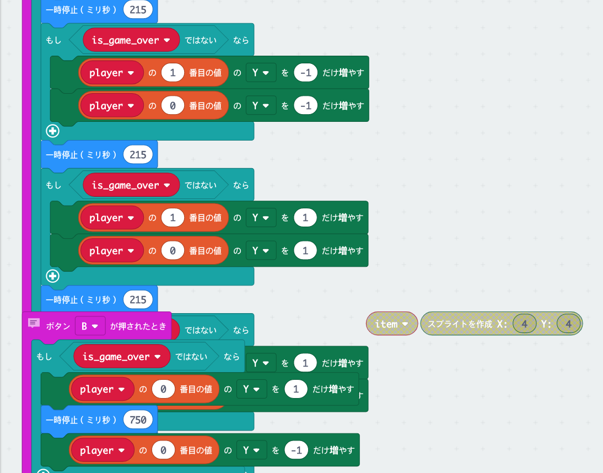
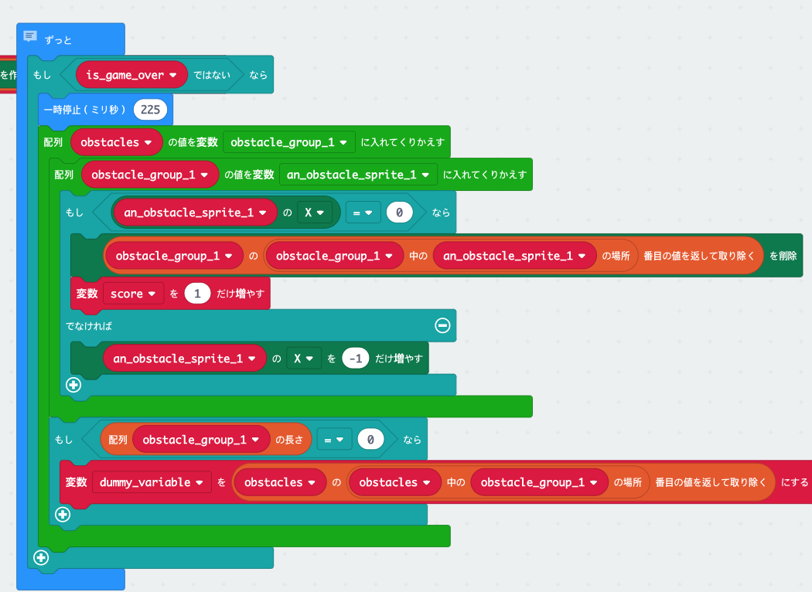
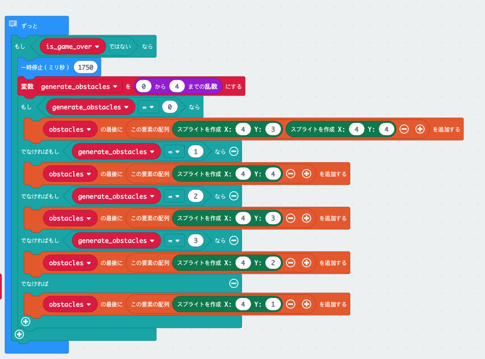
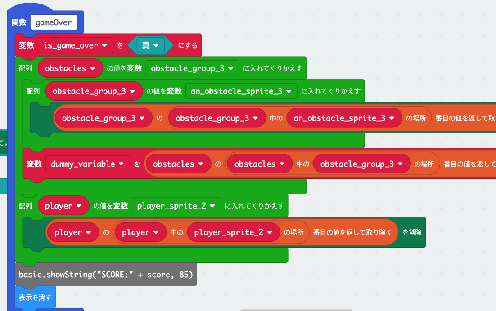
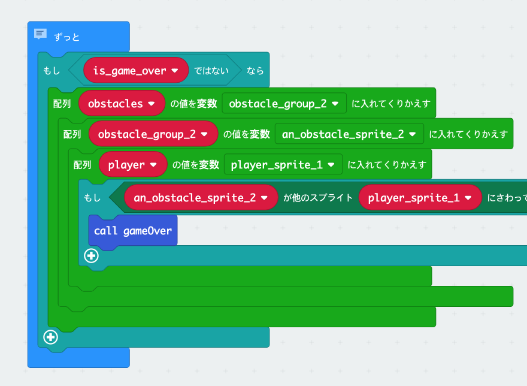

Dinosaur Game
microbitを使って簡単なドットゲームを制作。
プレイ方法
'A'ボタンを押すとジャンプ、'B'を押すと頭を下げる。
障害物にあ当たらず、走り続けて点数を取る。
プロセス
STEP.1


PLAYERを2個のドットに設定し、ジャンプをしたらドットが上に移動したり、
頭を下げたらドットが１つに消えたりするように入力
IF機能を使ってGAMEOVERではないとこういう行動をすると設定しておく。
STEP.2

障害物を作成。
GAMEOVERではないとずっと障害物が出てくるようにIF機能を使用。
STEP.3

障害物の位置などをランダムにするためにドットの位置をいくつか作成。
STEP.4

障害物に当たったらGAMEOVERにする。
当たった瞬間にGAMEOVER画面を流して避けた障害物の数を点数として採点して流す。
STEP.5

作ったCALLGAMEOVERを障害物に当たった瞬間に呼ぶ。